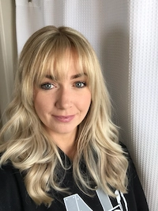

Mary Brooks | WDD 130
Hi! I am Mary. I was born and raised in southern Missouri. I met my husband in primary and we got married when we were eighteen. We moved to Rexburg to attend BYUI and after my husband graduated we moved to the tiny town of Clifton Idaho. We have five kids with ages ranging from 2-12. I love music, learning, and cooking asian food. I have my associates and was planning on applying for a nursing program, but I switched to software development in the hopes of finding remote work. I do not consider myself tech savvy so I am a bit nervous, but I am hopeful that it will go well. I am a pretty firm believer in being able to accomplish things we set our minds to. Here's to a great semester!